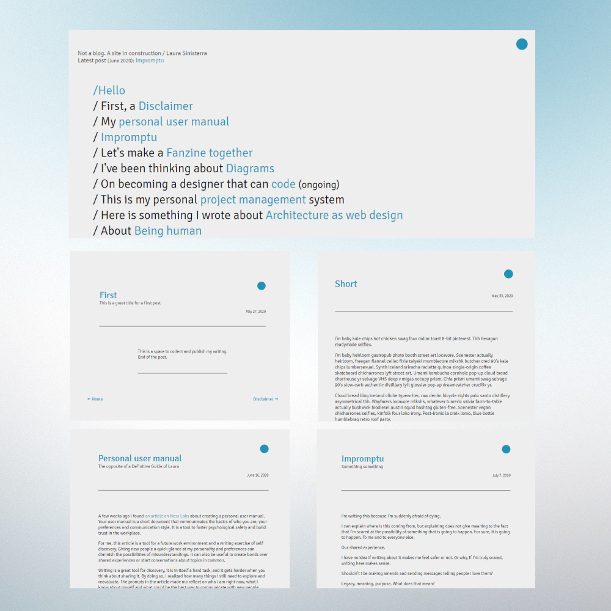
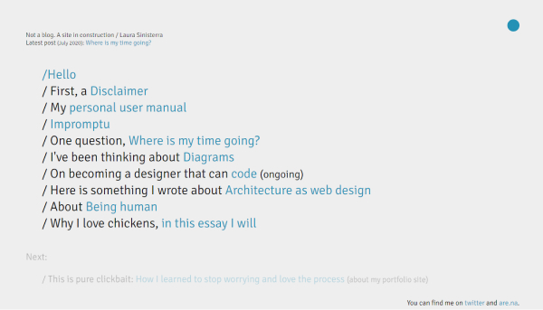

Process overview
Design a reading experience for mobile and desktop. Clean and free of distractions.
Design a reading experience for mobile and desktop. Clean and free of distractions.
Design a reading experience for mobile and desktop. Clean and free of distractions.
Starting point
The experience of reading online has become distracting. The amount of buttons and popups in every platform, from blogs to news sites, is frustrating for users.
While looking for the ideal space for my blog, I decided that I wanted a clean and non-intrusive platform. With a focus on legibility and free of interruptions.
Because this was my second time designing and building a website, I had to learn and research the technical aspects of what I wanted to do. Having a clear concept in mind made the process simpler.
My timeline was three weeks.
Execution
Sketches and wireframes
I started by recognizing the basics elements: body of text, title, date and navigation.
I'm a big fan of pencil and paper, sketching by hand allows me to think free of constraints.
With the mid-fi wireframes, I organized the elements and negative space was one of my priorities.
The titles narrative in the home page was a fun part of this project. Linking the ideas together is a fun way to show that my writing is always about the same topics.
The blue dot as a back button is one of my favorite things for this project. It was hard to do while I figured out what was possible but very rewarding at the end.
I’ll set another deadline for myself and change a few of the things I need to work on: design a 404 page for my “next” section, a few people have reach out to me telling me the link is broken.
This was a simple and challenging project that served as a consolidation of what I learned in HTML and CSS.
Sharing a project in public was helpful for accountability. Testing my skills in private is one thing, publishing means I need to pay attention to every single detail: from code to visuals.